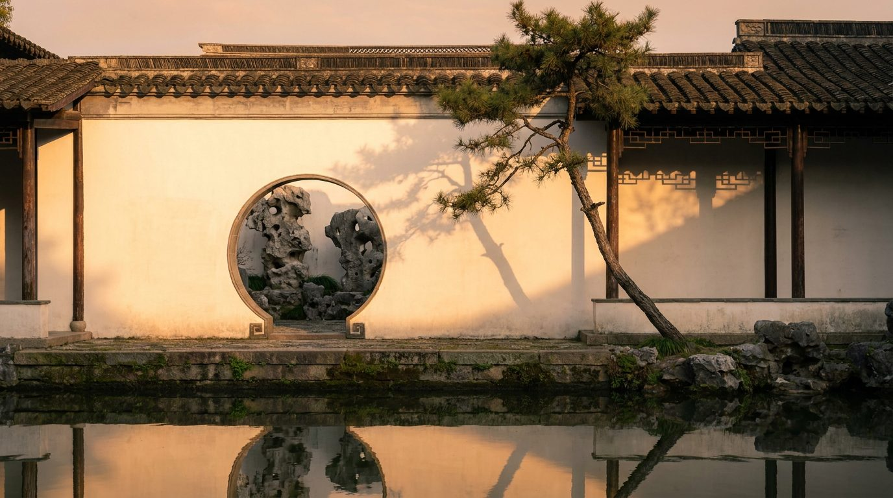
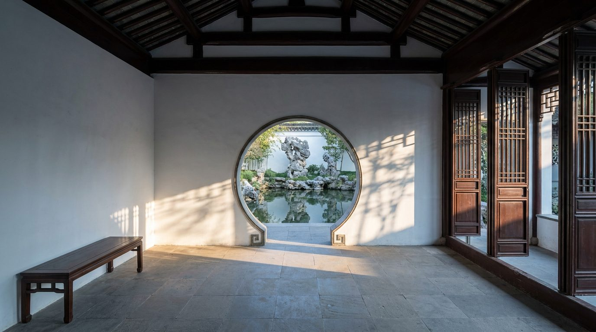

Atlante · INT-CN-02 · Cina · Asia
Villa a Suzhou con apertura a luna, muro bianco di calce e pietra Taihu
Esempi · esterno e interno


Perché funziona
Quiet per sottrazione: nessuna lucentezza, nessun metallo, solo calce bianca, legno scuro e pietra bucata, con la luce come unico materiale prezioso. Il cliente di Suzhou compra cultura e ritiro, il giardino come stanza all'aperto da guardare seduti, non come scenografia. Per Poetica è il controcampo di int-cn-01: stessa nazione, stesso secolo di riferimento, ma l'opposto del lusso metropolitano. Il made in Italy entra su misura, basso e in legno, senza gareggiare con la lacca. Non deve diventare una casa da tè per turisti: niente lanterne, niente rosso, niente draghi.
Architettura · elementi riproducibili
- muro di cinta in calce bianca, altezza 3200 mm, spessore 300 mm, copertina in tegole
- apertura a luna in pietra, diametro 2100 mm, soglia 150 mm, spalla 400 mm
- pietra Taihu 1800x1200x900 mm su piedistallo in pietra 400 mm
- galleria coperta larga 1800 mm, colonne in legno diametro 200 mm, passo 3000 mm
- laghetto 8000x5000 mm, profondità 600 mm, bordo in pietra 200 mm
- porta a pannelli laccata 1800x2400 mm, soglia in pietra 100 mm, cardini in ottone
- finestra ornamentale 1200x1200 mm con trama in cotto, davanzale 60 mm
Fatto verificato: i nove giardini classici di Suzhou, costruiti tra l'XI e il XIX secolo, ricreano paesaggi naturali in miniatura e sono riconosciuti dall'UNESCO come capolavori del genere.
Fatto verificato: il giardino classico cinese è chiuso da un muro bianco che fa da fondo, con laghetto al centro, gallerie e padiglioni; usa lo scenario preso in prestito (jiejing) e rocce calcaree di Taihu erose, giudicate per forma, sostanza, colore e texture, tanto che una sola pietra può rappresentare una montagna.
Fatto verificato: lo Humble Administrator's Garden misura 5,2 ettari ed è il più grande di Suzhou; creato nel 1513 da Wang Xianchen e completato nel 1526, contiene 48 edifici, 101 tavolette, 21 alberi secolari, e la casa sta a sud del giardino.
Valutazione: contrasto con int-cn-01, dove dominano lacca nera lucida e ottone; qui non c'è lucentezza se non l'acqua. Il rischio è il ristorante cinese da film: niente lanterne rosse, niente draghi, niente grade dorato.
Luce
Prompt di generazione (EN)
Interior hall of a villa in Suzhou, on the south side of a classical garden, looking through a moon opening. 4.2 m ceiling with dark lacquered timber beams 200 x 250 mm at 3000 mm spacing, lime-washed walls in matte chalk white, floor of grey stone slabs 900 x 900 mm, a 2100 mm circular moon gate framing a Taihu limestone rock and a still pond, lattice timber doors 1800 x 2400 mm folded open onto a covered gallery 1800 mm wide. Only a low 400 mm dark wood bench. One key light: soft afternoon sun from the south-west at 28 degrees, bamboo shadow across the white wall, a hard-edged pool of light on stone, the interior in cool 4500 K shade. 28 mm lens at 1.25 m, two-point perspective, parallel verticals. no people, no text, no logos.